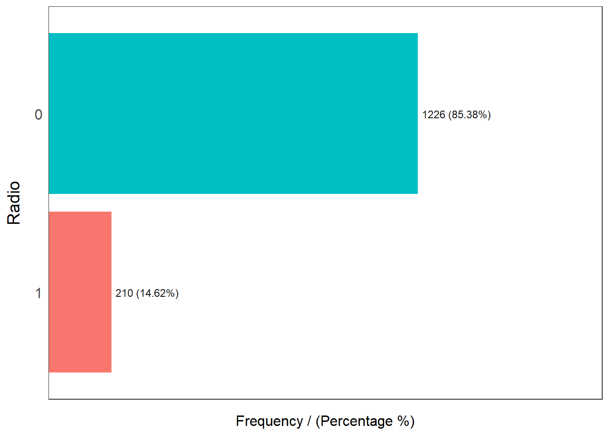
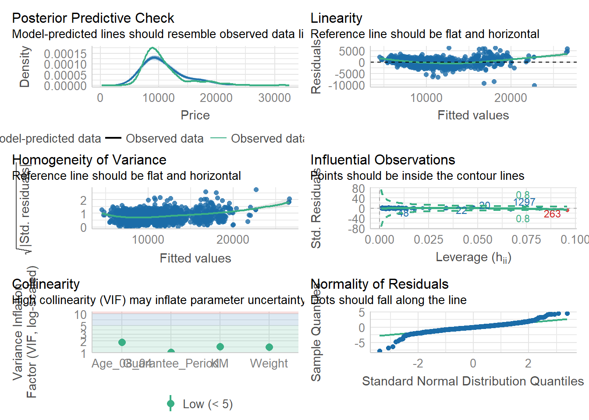

Show the code
pacman::p_load(tidyverse, readxl, report, performance, funModeling, parameters, gtsummary)An overview of explanatory model
pacman::p_load(tidyverse, readxl, report, performance, funModeling, parameters, gtsummary)This study will be based on fictitious data set provided with this lesson.
car_resale <- read_xls("data/ToyotaCorolla.xls",
"data")
problems(car_resale)glimpse(car_resale,60)Rows: 1,436
Columns: 38
$ Id <dbl> 81, 1, 2, 3, 4, 5, 6, 7, 8, 44, 4…
$ Model <chr> "TOYOTA Corolla 1.6 5drs 1 4/5-Do…
$ Price <dbl> 18950, 13500, 13750, 13950, 14950…
$ Age_08_04 <dbl> 25, 23, 23, 24, 26, 30, 32, 27, 3…
$ Mfg_Month <dbl> 8, 10, 10, 9, 7, 3, 1, 6, 3, 6, 1…
$ Mfg_Year <dbl> 2002, 2002, 2002, 2002, 2002, 200…
$ KM <dbl> 20019, 46986, 72937, 41711, 48000…
$ Quarterly_Tax <dbl> 100, 210, 210, 210, 210, 210, 210…
$ Weight <dbl> 1180, 1165, 1165, 1165, 1165, 117…
$ Guarantee_Period <dbl> 3, 3, 3, 3, 3, 3, 3, 3, 3, 3, 3, …
$ HP_Bin <chr> "100-120", "< 100", "< 100", "< 1…
$ CC_bin <chr> "1600", ">1600", ">1600", ">1600"…
$ Doors <dbl> 5, 3, 3, 3, 3, 3, 3, 3, 3, 5, 5, …
$ Gears <dbl> 5, 5, 5, 5, 5, 5, 5, 5, 5, 5, 5, …
$ Cylinders <dbl> 4, 4, 4, 4, 4, 4, 4, 4, 4, 4, 4, …
$ Fuel_Type <chr> "Petrol", "Diesel", "Diesel", "Di…
$ Color <chr> "Blue", "Blue", "Silver", "Blue",…
$ Met_Color <dbl> 1, 1, 1, 1, 0, 0, 0, 1, 1, 0, 0, …
$ Automatic <dbl> 1, 0, 0, 0, 0, 0, 0, 0, 0, 0, 0, …
$ Mfr_Guarantee <dbl> 0, 0, 0, 1, 1, 1, 0, 0, 1, 1, 1, …
$ BOVAG_Guarantee <dbl> 0, 1, 1, 1, 1, 1, 1, 1, 1, 1, 1, …
$ ABS <dbl> 1, 1, 1, 1, 1, 1, 1, 1, 1, 1, 1, …
$ Airbag_1 <dbl> 1, 1, 1, 1, 1, 1, 1, 1, 1, 1, 1, …
$ Airbag_2 <dbl> 1, 1, 1, 1, 1, 1, 1, 1, 1, 1, 1, …
$ Airco <dbl> 1, 0, 1, 0, 0, 1, 1, 1, 1, 1, 1, …
$ Automatic_airco <dbl> 1, 0, 0, 0, 0, 0, 0, 0, 0, 0, 0, …
$ Boardcomputer <dbl> 0, 1, 1, 1, 1, 1, 1, 1, 1, 1, 1, …
$ CD_Player <dbl> 1, 0, 1, 0, 0, 0, 0, 0, 1, 0, 0, …
$ Central_Lock <dbl> 1, 1, 1, 0, 0, 1, 1, 1, 1, 1, 1, …
$ Powered_Windows <dbl> 1, 1, 0, 0, 0, 1, 1, 1, 1, 1, 1, …
$ Power_Steering <dbl> 1, 1, 1, 1, 1, 1, 1, 1, 1, 1, 1, …
$ Radio <dbl> 0, 0, 0, 0, 0, 0, 0, 0, 0, 0, 0, …
$ Mistlamps <dbl> 0, 0, 0, 0, 0, 1, 1, 0, 0, 0, 0, …
$ Sport_Model <dbl> 0, 0, 0, 0, 0, 0, 0, 1, 0, 1, 1, …
$ Backseat_Divider <dbl> 0, 1, 1, 1, 1, 1, 1, 1, 1, 1, 1, …
$ Metallic_Rim <dbl> 0, 0, 0, 0, 0, 0, 0, 0, 0, 0, 0, …
$ Radio_cassette <dbl> 0, 0, 0, 0, 0, 0, 0, 0, 0, 0, 0, …
$ Tow_Bar <dbl> 0, 0, 0, 0, 0, 0, 0, 0, 0, 0, 0, …skimr::skim(car_resale)| Name | car_resale |
| Number of rows | 1436 |
| Number of columns | 38 |
| _______________________ | |
| Column type frequency: | |
| character | 5 |
| numeric | 33 |
| ________________________ | |
| Group variables | None |
Variable type: character
| skim_variable | n_missing | complete_rate | min | max | empty | n_unique | whitespace |
|---|---|---|---|---|---|---|---|
| Model | 0 | 1 | 14 | 75 | 0 | 372 | 0 |
| HP_Bin | 0 | 1 | 5 | 7 | 0 | 3 | 0 |
| CC_bin | 0 | 1 | 4 | 5 | 0 | 3 | 0 |
| Fuel_Type | 0 | 1 | 3 | 6 | 0 | 3 | 0 |
| Color | 0 | 1 | 3 | 6 | 0 | 10 | 0 |
Variable type: numeric
| skim_variable | n_missing | complete_rate | mean | sd | p0 | p25 | p50 | p75 | p100 | hist |
|---|---|---|---|---|---|---|---|---|---|---|
| Id | 0 | 1 | 721.56 | 416.48 | 1 | 361.75 | 721.5 | 1081.25 | 1442 | ▇▇▇▇▇ |
| Price | 0 | 1 | 10730.82 | 3626.96 | 4350 | 8450.00 | 9900.0 | 11950.00 | 32500 | ▇▅▁▁▁ |
| Age_08_04 | 0 | 1 | 55.95 | 18.60 | 1 | 44.00 | 61.0 | 70.00 | 80 | ▁▂▃▆▇ |
| Mfg_Month | 0 | 1 | 5.55 | 3.35 | 1 | 3.00 | 5.0 | 8.00 | 12 | ▇▅▅▃▅ |
| Mfg_Year | 0 | 1 | 1999.63 | 1.54 | 1998 | 1998.00 | 1999.0 | 2001.00 | 2004 | ▇▂▂▁▁ |
| KM | 0 | 1 | 68533.26 | 37506.45 | 1 | 43000.00 | 63389.5 | 87020.75 | 243000 | ▅▇▂▁▁ |
| Quarterly_Tax | 0 | 1 | 87.12 | 41.13 | 19 | 69.00 | 85.0 | 85.00 | 283 | ▇▇▁▂▁ |
| Weight | 0 | 1 | 1072.46 | 52.64 | 1000 | 1040.00 | 1070.0 | 1085.00 | 1615 | ▇▁▁▁▁ |
| Guarantee_Period | 0 | 1 | 3.82 | 3.01 | 3 | 3.00 | 3.0 | 3.00 | 36 | ▇▁▁▁▁ |
| Doors | 0 | 1 | 4.03 | 0.95 | 2 | 3.00 | 4.0 | 5.00 | 5 | ▁▇▁▂▇ |
| Gears | 0 | 1 | 5.03 | 0.19 | 3 | 5.00 | 5.0 | 5.00 | 6 | ▁▁▁▇▁ |
| Cylinders | 0 | 1 | 4.00 | 0.00 | 4 | 4.00 | 4.0 | 4.00 | 4 | ▁▁▇▁▁ |
| Met_Color | 0 | 1 | 0.67 | 0.47 | 0 | 0.00 | 1.0 | 1.00 | 1 | ▃▁▁▁▇ |
| Automatic | 0 | 1 | 0.06 | 0.23 | 0 | 0.00 | 0.0 | 0.00 | 1 | ▇▁▁▁▁ |
| Mfr_Guarantee | 0 | 1 | 0.41 | 0.49 | 0 | 0.00 | 0.0 | 1.00 | 1 | ▇▁▁▁▆ |
| BOVAG_Guarantee | 0 | 1 | 0.90 | 0.31 | 0 | 1.00 | 1.0 | 1.00 | 1 | ▁▁▁▁▇ |
| ABS | 0 | 1 | 0.81 | 0.39 | 0 | 1.00 | 1.0 | 1.00 | 1 | ▂▁▁▁▇ |
| Airbag_1 | 0 | 1 | 0.97 | 0.17 | 0 | 1.00 | 1.0 | 1.00 | 1 | ▁▁▁▁▇ |
| Airbag_2 | 0 | 1 | 0.72 | 0.45 | 0 | 0.00 | 1.0 | 1.00 | 1 | ▃▁▁▁▇ |
| Airco | 0 | 1 | 0.51 | 0.50 | 0 | 0.00 | 1.0 | 1.00 | 1 | ▇▁▁▁▇ |
| Automatic_airco | 0 | 1 | 0.06 | 0.23 | 0 | 0.00 | 0.0 | 0.00 | 1 | ▇▁▁▁▁ |
| Boardcomputer | 0 | 1 | 0.29 | 0.46 | 0 | 0.00 | 0.0 | 1.00 | 1 | ▇▁▁▁▃ |
| CD_Player | 0 | 1 | 0.22 | 0.41 | 0 | 0.00 | 0.0 | 0.00 | 1 | ▇▁▁▁▂ |
| Central_Lock | 0 | 1 | 0.58 | 0.49 | 0 | 0.00 | 1.0 | 1.00 | 1 | ▆▁▁▁▇ |
| Powered_Windows | 0 | 1 | 0.56 | 0.50 | 0 | 0.00 | 1.0 | 1.00 | 1 | ▆▁▁▁▇ |
| Power_Steering | 0 | 1 | 0.98 | 0.15 | 0 | 1.00 | 1.0 | 1.00 | 1 | ▁▁▁▁▇ |
| Radio | 0 | 1 | 0.15 | 0.35 | 0 | 0.00 | 0.0 | 0.00 | 1 | ▇▁▁▁▂ |
| Mistlamps | 0 | 1 | 0.26 | 0.44 | 0 | 0.00 | 0.0 | 1.00 | 1 | ▇▁▁▁▃ |
| Sport_Model | 0 | 1 | 0.30 | 0.46 | 0 | 0.00 | 0.0 | 1.00 | 1 | ▇▁▁▁▃ |
| Backseat_Divider | 0 | 1 | 0.77 | 0.42 | 0 | 1.00 | 1.0 | 1.00 | 1 | ▂▁▁▁▇ |
| Metallic_Rim | 0 | 1 | 0.20 | 0.40 | 0 | 0.00 | 0.0 | 0.00 | 1 | ▇▁▁▁▂ |
| Radio_cassette | 0 | 1 | 0.15 | 0.35 | 0 | 0.00 | 0.0 | 0.00 | 1 | ▇▁▁▁▂ |
| Tow_Bar | 0 | 1 | 0.28 | 0.45 | 0 | 0.00 | 0.0 | 1.00 | 1 | ▇▁▁▁▃ |
When use funModeling function, turn the “tbl_df” into “data.frame”.
#status <- df_status(car_resale) << alternate way to code
car_resale %>%
df_status() variable q_zeros p_zeros q_na p_na q_inf p_inf type unique
1 Id 0 0.00 0 0 0 0 numeric 1436
2 Model 0 0.00 0 0 0 0 character 372
3 Price 0 0.00 0 0 0 0 numeric 236
4 Age_08_04 0 0.00 0 0 0 0 numeric 77
5 Mfg_Month 0 0.00 0 0 0 0 numeric 12
6 Mfg_Year 0 0.00 0 0 0 0 numeric 7
7 KM 0 0.00 0 0 0 0 numeric 1263
8 Quarterly_Tax 0 0.00 0 0 0 0 numeric 13
9 Weight 0 0.00 0 0 0 0 numeric 59
10 Guarantee_Period 0 0.00 0 0 0 0 numeric 9
11 HP_Bin 0 0.00 0 0 0 0 character 3
12 CC_bin 0 0.00 0 0 0 0 character 3
13 Doors 0 0.00 0 0 0 0 numeric 4
14 Gears 0 0.00 0 0 0 0 numeric 4
15 Cylinders 0 0.00 0 0 0 0 numeric 1
16 Fuel_Type 0 0.00 0 0 0 0 character 3
17 Color 0 0.00 0 0 0 0 character 10
18 Met_Color 467 32.52 0 0 0 0 numeric 2
19 Automatic 1356 94.43 0 0 0 0 numeric 2
20 Mfr_Guarantee 848 59.05 0 0 0 0 numeric 2
21 BOVAG_Guarantee 150 10.45 0 0 0 0 numeric 2
22 ABS 268 18.66 0 0 0 0 numeric 2
23 Airbag_1 42 2.92 0 0 0 0 numeric 2
24 Airbag_2 398 27.72 0 0 0 0 numeric 2
25 Airco 706 49.16 0 0 0 0 numeric 2
26 Automatic_airco 1355 94.36 0 0 0 0 numeric 2
27 Boardcomputer 1013 70.54 0 0 0 0 numeric 2
28 CD_Player 1122 78.13 0 0 0 0 numeric 2
29 Central_Lock 603 41.99 0 0 0 0 numeric 2
30 Powered_Windows 629 43.80 0 0 0 0 numeric 2
31 Power_Steering 32 2.23 0 0 0 0 numeric 2
32 Radio 1226 85.38 0 0 0 0 numeric 2
33 Mistlamps 1067 74.30 0 0 0 0 numeric 2
34 Sport_Model 1005 69.99 0 0 0 0 numeric 2
35 Backseat_Divider 330 22.98 0 0 0 0 numeric 2
36 Metallic_Rim 1142 79.53 0 0 0 0 numeric 2
37 Radio_cassette 1227 85.45 0 0 0 0 numeric 2
38 Tow_Bar 1037 72.21 0 0 0 0 numeric 2cols <- c("Mfg_Month", "HP_Bin", "CC_bin", "Doors", "Gears", "Cylinders", "Fuel_Type", "Color", "Met_Color", "Automatic", "Mfr_Guarantee", "BOVAG_Guarantee", "ABS", "Airbag_1", "Airbag_2", "Airco", "Automatic_airco", "Boardcomputer", "CD_Player", "Central_Lock", "Powered_Windows", "Power_Steering", "Radio", "Mistlamps", "Sport_Model", "Backseat_Divider", "Metallic_Rim", "Radio_cassette", "Tow_Bar")
car_resale <- read_xls("data/ToyotaCorolla.xls",
sheet = "data") %>%
mutate(Id = as.character(Id)) %>%
mutate_each_(funs(factor(.)),
cols)Warning: `mutate_each_()` was deprecated in dplyr 0.7.0.
ℹ Please use `across()` instead.Warning: `funs()` was deprecated in dplyr 0.8.0.
ℹ Please use a list of either functions or lambdas:
# Simple named list: list(mean = mean, median = median)
# Auto named with `tibble::lst()`: tibble::lst(mean, median)
# Using lambdas list(~ mean(., trim = .2), ~ median(., na.rm = TRUE))profiling_num(car_resale) variable mean std_dev variation_coef p_01 p_05
1 Price 10730.82451 3626.964585 0.3379949584 5917.5 6900.00
2 Age_08_04 55.94708 18.599988 0.3324568491 8.0 19.00
3 Mfg_Year 1999.62535 1.540722 0.0007705053 1998.0 1998.00
4 KM 68533.25975 37506.448872 0.5472736743 4350.0 17047.75
5 Quarterly_Tax 87.12256 41.128611 0.4720776117 19.0 34.75
6 Weight 1072.45961 52.641120 0.0490844783 1000.0 1015.00
7 Guarantee_Period 3.81546 3.011025 0.7891643405 3.0 3.00
p_25 p_50 p_75 p_95 p_99 skewness kurtosis iqr
1 8450 9900.0 11950.00 18950.0 22250.00 1.7021046 6.720604 3500.00
2 44 61.0 70.00 79.0 80.00 -0.8258381 2.919459 26.00
3 1998 1999.0 2001.00 2003.0 2004.00 0.9103514 3.066152 3.00
4 43000 63389.5 87020.75 138420.5 191368.00 1.0148507 4.675020 44020.75
5 69 85.0 85.00 185.0 234.00 1.9917506 7.279218 16.00
6 1040 1070.0 1085.00 1150.0 1263.25 3.1053913 22.291372 45.00
7 3 3.0 3.00 12.0 12.00 5.8323346 48.731612 0.00
range_98 range_80
1 [5917.5, 22250] [7450, 15950]
2 [8, 80] [27, 77]
3 [1998, 2004] [1998, 2002]
4 [4350, 191368] [26241.5, 117087.5]
5 [19, 234] [69, 185]
6 [1000, 1263.25] [1020, 1130]
7 [3, 12] [3, 6]plot_num(car_resale)Warning: The `<scale>` argument of `guides()` cannot be `FALSE`. Use "none" instead as
of ggplot2 3.3.4.
ℹ The deprecated feature was likely used in the funModeling package.
Please report the issue at <https://github.com/pablo14/funModeling/issues>.freq(car_resale[3:38]) Mfg_Month frequency percentage cumulative_perc
1 1 207 14.42 14.42
2 4 154 10.72 25.14
3 3 138 9.61 34.75
4 2 134 9.33 44.08
5 7 133 9.26 53.34
6 6 120 8.36 61.70
7 5 118 8.22 69.92
8 8 115 8.01 77.93
9 10 101 7.03 84.96
10 9 76 5.29 90.25
11 11 72 5.01 95.26
12 12 68 4.74 100.00 HP_Bin frequency percentage cumulative_perc
1 100-120 865 60.24 60.24
2 < 100 560 39.00 99.24
3 > 120 11 0.77 100.00 CC_bin frequency percentage cumulative_perc
1 1600 854 59.47 59.47
2 <1600 416 28.97 88.44
3 >1600 166 11.56 100.00 Doors frequency percentage cumulative_perc
1 5 674 46.94 46.94
2 3 622 43.31 90.25
3 4 138 9.61 99.86
4 2 2 0.14 100.00 Gears frequency percentage cumulative_perc
1 5 1390 96.80 96.80
2 6 43 2.99 99.79
3 3 2 0.14 99.93
4 4 1 0.07 100.00 Cylinders frequency percentage cumulative_perc
1 4 1436 100 100 Fuel_Type frequency percentage cumulative_perc
1 Petrol 1264 88.02 88.02
2 Diesel 155 10.79 98.81
3 CNG 17 1.18 100.00 Color frequency percentage cumulative_perc
1 Grey 301 20.96 20.96
2 Blue 283 19.71 40.67
3 Red 278 19.36 60.03
4 Green 220 15.32 75.35
5 Black 191 13.30 88.65
6 Silver 122 8.50 97.15
7 White 31 2.16 99.31
8 Violet 4 0.28 99.59
9 Beige 3 0.21 99.80
10 Yellow 3 0.21 100.00 Met_Color frequency percentage cumulative_perc
1 1 969 67.48 67.48
2 0 467 32.52 100.00 Automatic frequency percentage cumulative_perc
1 0 1356 94.43 94.43
2 1 80 5.57 100.00 Mfr_Guarantee frequency percentage cumulative_perc
1 0 848 59.05 59.05
2 1 588 40.95 100.00 BOVAG_Guarantee frequency percentage cumulative_perc
1 1 1286 89.55 89.55
2 0 150 10.45 100.00 ABS frequency percentage cumulative_perc
1 1 1168 81.34 81.34
2 0 268 18.66 100.00 Airbag_1 frequency percentage cumulative_perc
1 1 1394 97.08 97.08
2 0 42 2.92 100.00 Airbag_2 frequency percentage cumulative_perc
1 1 1038 72.28 72.28
2 0 398 27.72 100.00 Airco frequency percentage cumulative_perc
1 1 730 50.84 50.84
2 0 706 49.16 100.00 Automatic_airco frequency percentage cumulative_perc
1 0 1355 94.36 94.36
2 1 81 5.64 100.00 Boardcomputer frequency percentage cumulative_perc
1 0 1013 70.54 70.54
2 1 423 29.46 100.00 CD_Player frequency percentage cumulative_perc
1 0 1122 78.13 78.13
2 1 314 21.87 100.00 Central_Lock frequency percentage cumulative_perc
1 1 833 58.01 58.01
2 0 603 41.99 100.00 Powered_Windows frequency percentage cumulative_perc
1 1 807 56.2 56.2
2 0 629 43.8 100.0 Power_Steering frequency percentage cumulative_perc
1 1 1404 97.77 97.77
2 0 32 2.23 100.00
Radio frequency percentage cumulative_perc
1 0 1226 85.38 85.38
2 1 210 14.62 100.00 Mistlamps frequency percentage cumulative_perc
1 0 1067 74.3 74.3
2 1 369 25.7 100.0 Sport_Model frequency percentage cumulative_perc
1 0 1005 69.99 69.99
2 1 431 30.01 100.00 Backseat_Divider frequency percentage cumulative_perc
1 1 1106 77.02 77.02
2 0 330 22.98 100.00 Metallic_Rim frequency percentage cumulative_perc
1 0 1142 79.53 79.53
2 1 294 20.47 100.00 Radio_cassette frequency percentage cumulative_perc
1 0 1227 85.45 85.45
2 1 209 14.55 100.00 Tow_Bar frequency percentage cumulative_perc
1 0 1037 72.21 72.21
2 1 399 27.79 100.00[1] "Variables processed: Mfg_Month, HP_Bin, CC_bin, Doors, Gears, Cylinders, Fuel_Type, Color, Met_Color, Automatic, Mfr_Guarantee, BOVAG_Guarantee, ABS, Airbag_1, Airbag_2, Airco, Automatic_airco, Boardcomputer, CD_Player, Central_Lock, Powered_Windows, Power_Steering, Radio, Mistlamps, Sport_Model, Backseat_Divider, Metallic_Rim, Radio_cassette, Tow_Bar"model <- lm(Price ~ Age_08_04 +
Mfg_Year +
KM +
Weight +
Guarantee_Period,
data = car_resale)
model
Call:
lm(formula = Price ~ Age_08_04 + Mfg_Year + KM + Weight + Guarantee_Period,
data = car_resale)
Coefficients:
(Intercept) Age_08_04 Mfg_Year KM
-2.637e+06 -1.409e+01 1.315e+03 -2.323e-02
Weight Guarantee_Period
1.903e+01 2.770e+01 check_collinearity(model)# Check for Multicollinearity
Low Correlation
Term VIF VIF 95% CI Increased SE Tolerance Tolerance 95% CI
Guarantee_Period 1.04 [1.01, 1.17] 1.02 0.97 [0.86, 0.99]
Age_08_04 31.07 [28.08, 34.38] 5.57 0.03 [0.03, 0.04]
Mfg_Year 31.16 [28.16, 34.48] 5.58 0.03 [0.03, 0.04]
High Correlation
Term VIF VIF 95% CI Increased SE Tolerance Tolerance 95% CI
KM 1.46 [1.37, 1.57] 1.21 0.68 [0.64, 0.73]
Weight 1.41 [1.32, 1.51] 1.19 0.71 [0.66, 0.76]https://easystats.github.io/easystats/
check_c <- check_collinearity(model)
plot(check_c)Variable `Component` is not in your data frame :/
model1 <- lm(Price ~ Age_08_04 +
KM +
Weight +
Guarantee_Period,
data = car_resale)
check_normality(model1)Warning: Non-normality of residuals detected (p < .001).check_n <- check_normality(model1)
plot(check_n)
check_h <- check_heteroscedasticity(model1)
plot(check_h)
check_model(model1)Variable `Component` is not in your data frame :/
summary(model1)
Call:
lm(formula = Price ~ Age_08_04 + KM + Weight + Guarantee_Period,
data = car_resale)
Residuals:
Min 1Q Median 3Q Max
-10249.4 -768.6 -15.4 738.5 6356.5
Coefficients:
Estimate Std. Error t value Pr(>|t|)
(Intercept) -2.186e+03 9.722e+02 -2.248 0.0247 *
Age_08_04 -1.195e+02 2.760e+00 -43.292 <2e-16 ***
KM -2.406e-02 1.201e-03 -20.042 <2e-16 ***
Weight 1.972e+01 8.379e-01 23.533 <2e-16 ***
Guarantee_Period 2.682e+01 1.261e+01 2.126 0.0336 *
---
Signif. codes: 0 '***' 0.001 '**' 0.01 '*' 0.05 '.' 0.1 ' ' 1
Residual standard error: 1413 on 1431 degrees of freedom
Multiple R-squared: 0.8486, Adjusted R-squared: 0.8482
F-statistic: 2005 on 4 and 1431 DF, p-value: < 2.2e-16tbl_regression(model1,
intercept = TRUE)| Characteristic | Beta | 95% CI1 | p-value |
|---|---|---|---|
| (Intercept) | -2,186 | -4,093, -278 | 0.025 |
| Age_08_04 | -119 | -125, -114 | <0.001 |
| KM | -0.02 | -0.03, -0.02 | <0.001 |
| Weight | 20 | 18, 21 | <0.001 |
| Guarantee_Period | 27 | 2.1, 52 | 0.034 |
| 1 CI = Confidence Interval | |||
tbl_regression(model1,
intercept = TRUE) %>%
add_glance_source_note(
label = list(sigma ~ "\U03C3"),
include = c(r.squared,
adj.r.squared,
AIC,
statistic,
p.value,
sigma))| Characteristic | Beta | 95% CI1 | p-value |
|---|---|---|---|
| (Intercept) | -2,186 | -4,093, -278 | 0.025 |
| Age_08_04 | -119 | -125, -114 | <0.001 |
| KM | -0.02 | -0.03, -0.02 | <0.001 |
| Weight | 20 | 18, 21 | <0.001 |
| Guarantee_Period | 27 | 2.1, 52 | 0.034 |
| R² = 0.849; Adjusted R² = 0.848; AIC = 24,915; Statistic = 2,005; p-value = <0.001; σ = 1,413 | |||
| 1 CI = Confidence Interval | |||
We fitted a linear model (estimated using OLS) to predict Price with Age_08_04 (formula: Price ~
Age_08_04 + KM + Weight + Guarantee_Period). The model explains a statistically significant and
substantial proportion of variance (R2 = 0.85, F(4, 1431) = 2004.93, p < .001, adj. R2 = 0.85). The
model’s intercept, corresponding to Age_08_04 = 0, is at -2185.52 (95% CI [-4092.59, -278.45], t(1431)
= -2.25, p = 0.025). Within this model:
-114.08], t(1431) = -43.29, p < .001; Std. beta = -0.61, 95% CI [-0.64, -0.59])
t(1431) = -20.04, p < .001; Std. beta = -0.25, 95% CI [-0.27, -0.22])
t(1431) = 23.53, p < .001; Std. beta = 0.29, 95% CI [0.26, 0.31])
[2.08, 51.56], t(1431) = 2.13, p = 0.034; Std. beta = 0.02, 95% CI [1.73e-03, 0.04])
Standardized parameters were obtained by fitting the model on a standardized version of the dataset.
95% Confidence Intervals (CIs) and p-values were computed using a Wald t-distribution approximation.,
We fitted a linear model (estimated using OLS) to predict Price with KM (formula: Price ~ Age_08_04 +
KM + Weight + Guarantee_Period). The model explains a statistically significant and substantial
proportion of variance (R2 = 0.85, F(4, 1431) = 2004.93, p < .001, adj. R2 = 0.85). The model’s
intercept, corresponding to KM = 0, is at -2185.52 (95% CI [-4092.59, -278.45], t(1431) = -2.25, p =
0.025). Within this model:
-114.08], t(1431) = -43.29, p < .001; Std. beta = -0.61, 95% CI [-0.64, -0.59])
t(1431) = -20.04, p < .001; Std. beta = -0.25, 95% CI [-0.27, -0.22])
t(1431) = 23.53, p < .001; Std. beta = 0.29, 95% CI [0.26, 0.31])
[2.08, 51.56], t(1431) = 2.13, p = 0.034; Std. beta = 0.02, 95% CI [1.73e-03, 0.04])
Standardized parameters were obtained by fitting the model on a standardized version of the dataset.
95% Confidence Intervals (CIs) and p-values were computed using a Wald t-distribution approximation.,
We fitted a linear model (estimated using OLS) to predict Price with Weight (formula: Price ~
Age_08_04 + KM + Weight + Guarantee_Period). The model explains a statistically significant and
substantial proportion of variance (R2 = 0.85, F(4, 1431) = 2004.93, p < .001, adj. R2 = 0.85). The
model’s intercept, corresponding to Weight = 0, is at -2185.52 (95% CI [-4092.59, -278.45], t(1431) =
-2.25, p = 0.025). Within this model:
-114.08], t(1431) = -43.29, p < .001; Std. beta = -0.61, 95% CI [-0.64, -0.59])
t(1431) = -20.04, p < .001; Std. beta = -0.25, 95% CI [-0.27, -0.22])
t(1431) = 23.53, p < .001; Std. beta = 0.29, 95% CI [0.26, 0.31])
[2.08, 51.56], t(1431) = 2.13, p = 0.034; Std. beta = 0.02, 95% CI [1.73e-03, 0.04])
Standardized parameters were obtained by fitting the model on a standardized version of the dataset.
95% Confidence Intervals (CIs) and p-values were computed using a Wald t-distribution approximation.
and We fitted a linear model (estimated using OLS) to predict Price with Guarantee_Period (formula:
Price ~ Age_08_04 + KM + Weight + Guarantee_Period). The model explains a statistically significant
and substantial proportion of variance (R2 = 0.85, F(4, 1431) = 2004.93, p < .001, adj. R2 = 0.85).
The model’s intercept, corresponding to Guarantee_Period = 0, is at -2185.52 (95% CI [-4092.59,
-278.45], t(1431) = -2.25, p = 0.025). Within this model:
-114.08], t(1431) = -43.29, p < .001; Std. beta = -0.61, 95% CI [-0.64, -0.59])
t(1431) = -20.04, p < .001; Std. beta = -0.25, 95% CI [-0.27, -0.22])
t(1431) = 23.53, p < .001; Std. beta = 0.29, 95% CI [0.26, 0.31])
[2.08, 51.56], t(1431) = 2.13, p = 0.034; Std. beta = 0.02, 95% CI [1.73e-03, 0.04])
Standardized parameters were obtained by fitting the model on a standardized version of the dataset.
95% Confidence Intervals (CIs) and p-values were computed using a Wald t-distribution approximation.